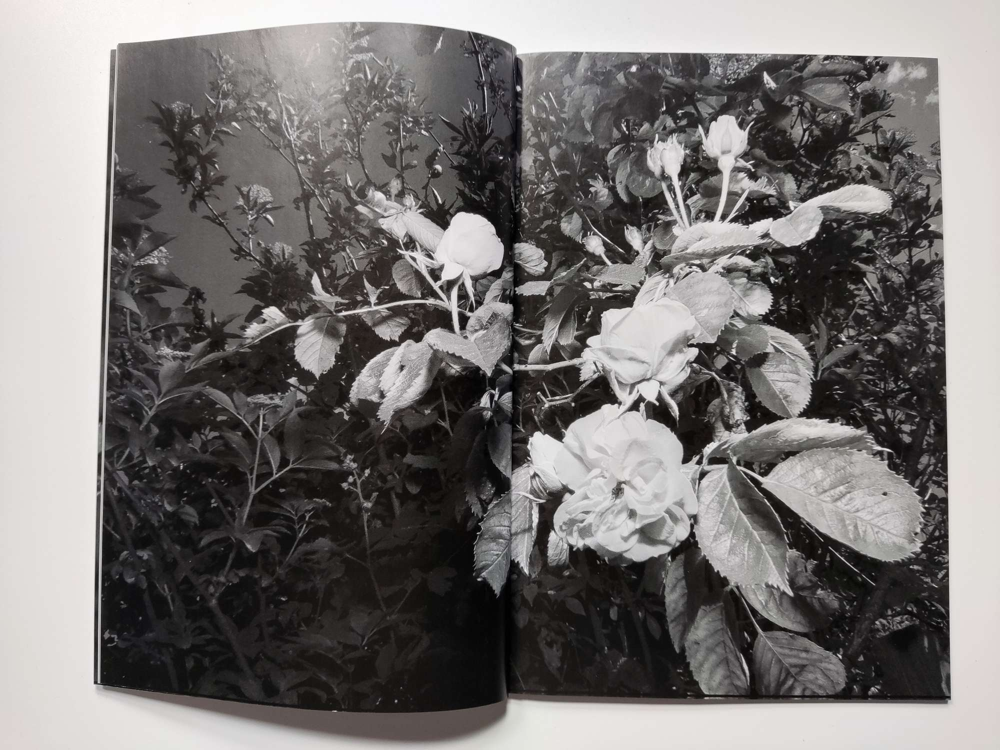
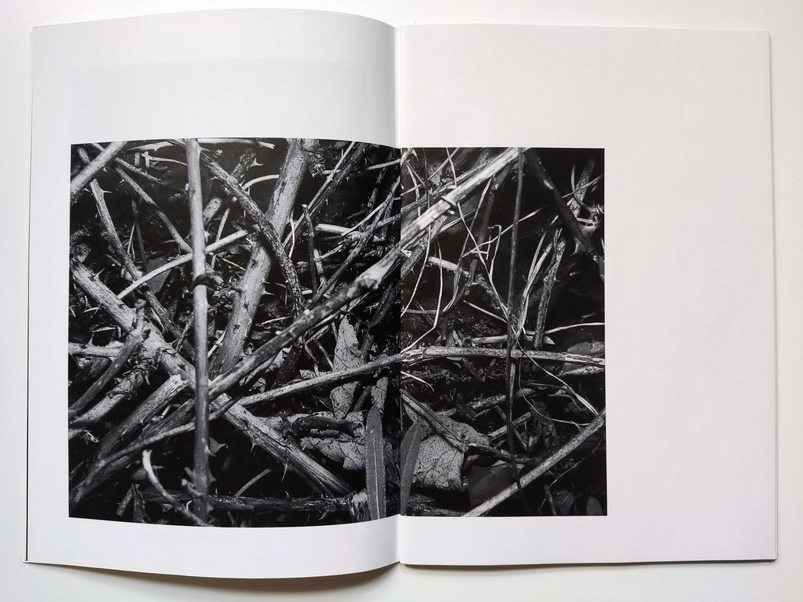
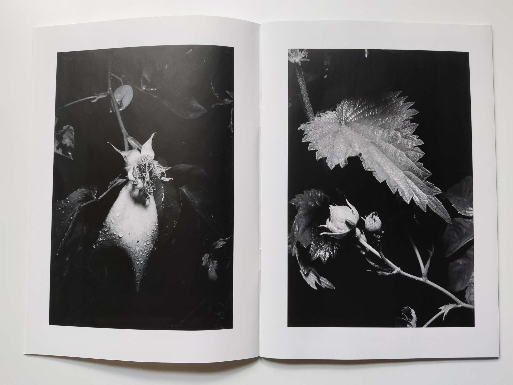

Snag / Inflorescence
My MA final. An A5 48 page book. A unique nature-human relationship within a marginal space- a transitional border between a neglected rose garden and a new wilder space where the existing cultivated nature grows alongside opportunistic self-seeding nature.


